类地星
连续大陆、森林、海洋与三种采储综合体。
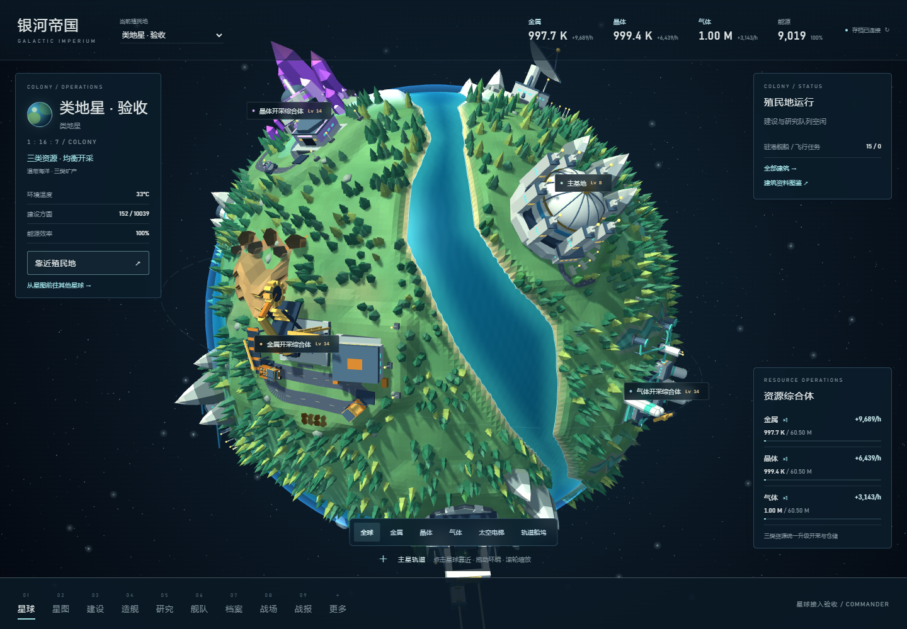
查看采储综合体近景
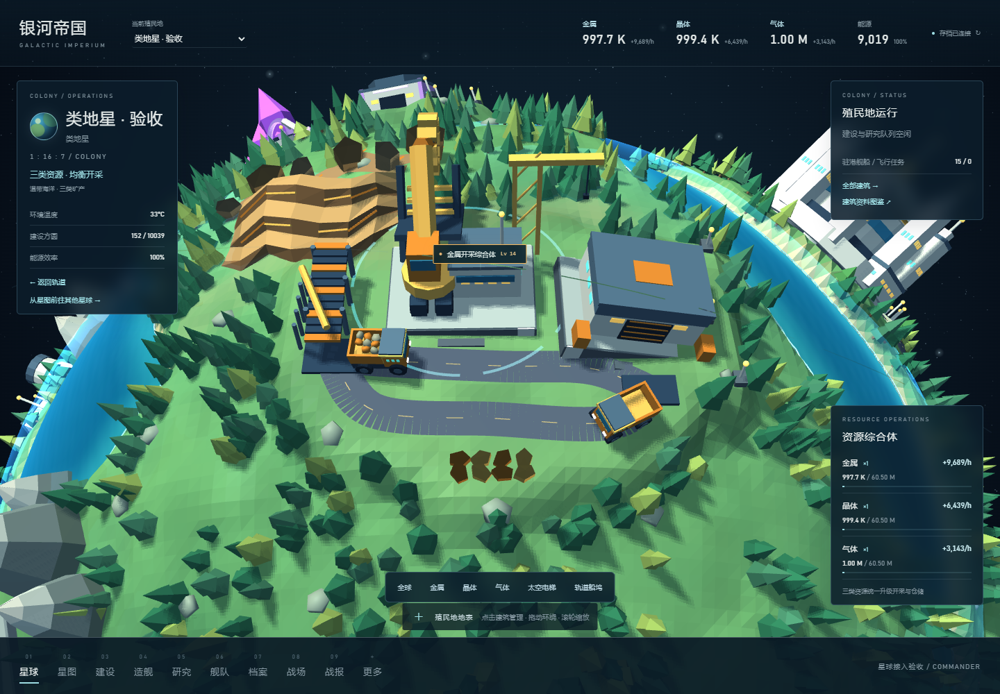
采集和仓储合为三栋独立升级的综合体，全部14个普通设施沿球面分布。建设、研究与造舰通过侧栏操作，太空电梯将地面连接到轨道船坞。
以下画面来自隔离验收存档，展示行星外观与建筑状态。正式游戏使用你的星球、资源、建筑等级和队列。
连续大陆、森林、海洋与三种采储综合体。


炭黑厚岩板被熔岩河分开，破口火山沿山脊流淌熔浆，浓烟向上扩散。
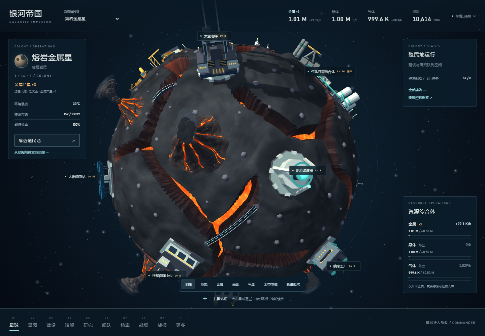
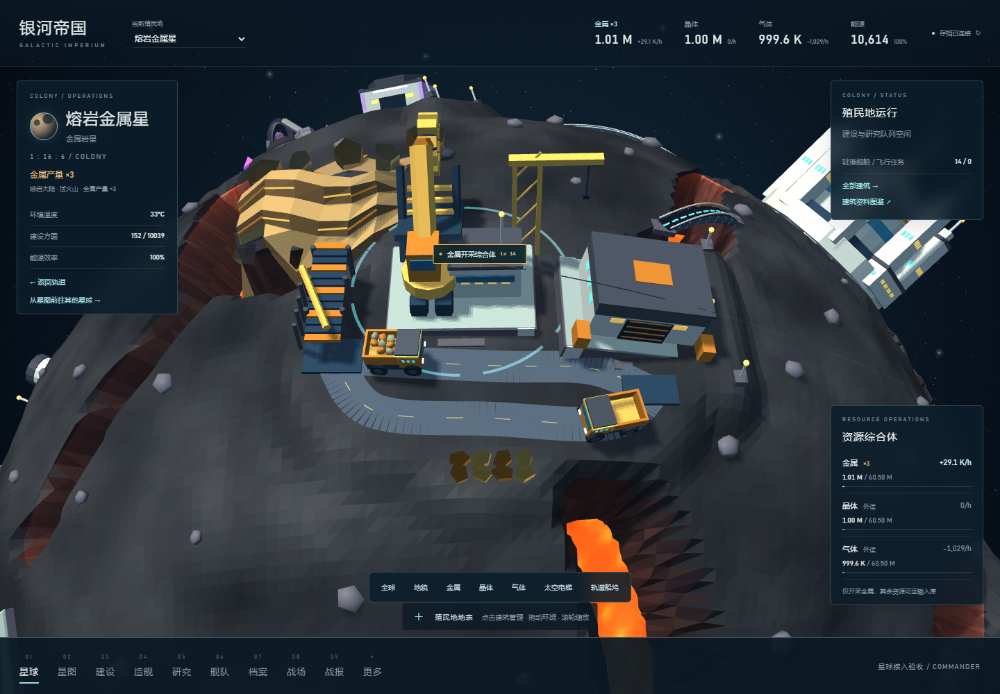
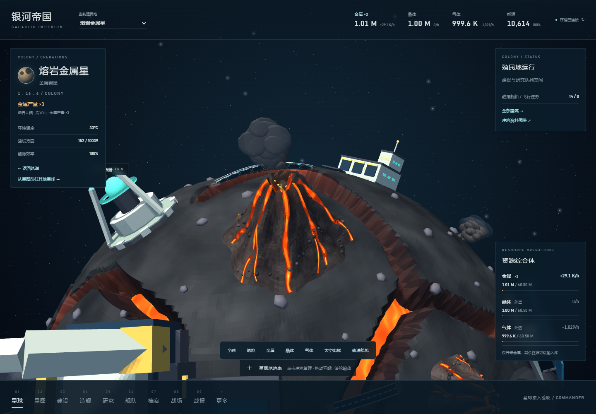
赤红厚高原与深峡谷，晶柱从岩壁和谷底长出，深蓝根部衬出青蓝尖端。
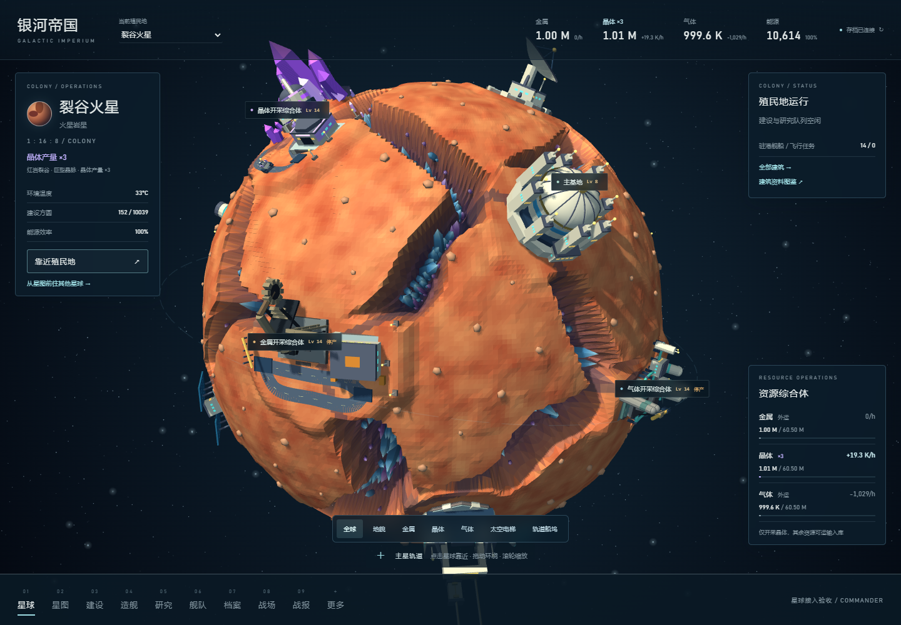
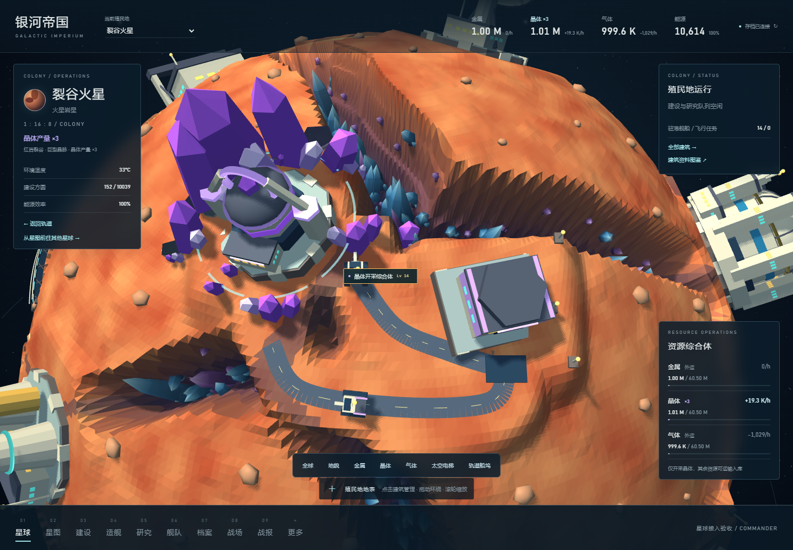
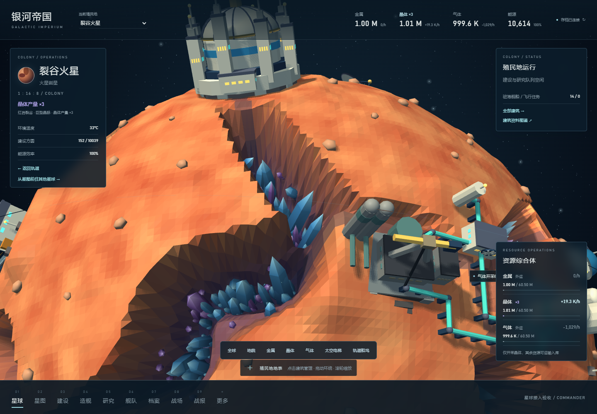
多层差速云带、巨型风暴和球面浮空平台。
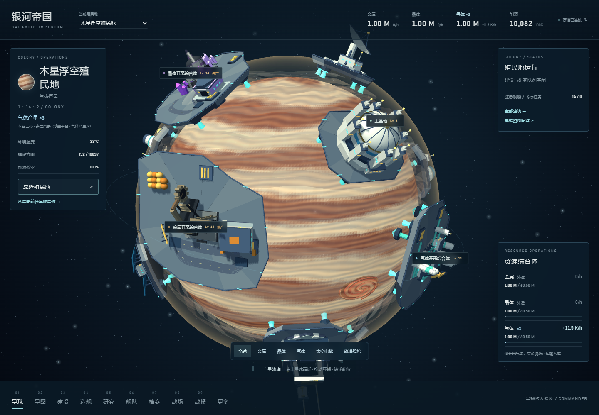
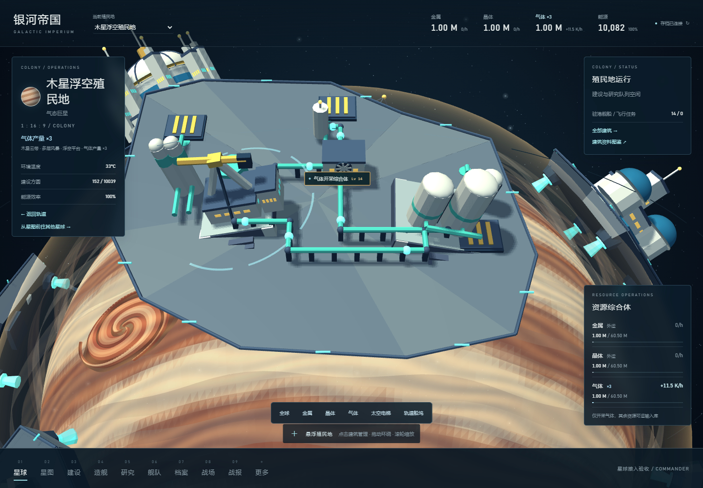
双舱沿缆索往返，舰船根据真实造舰队列在空间站中拼装。队列空闲时，船坞保持空置。
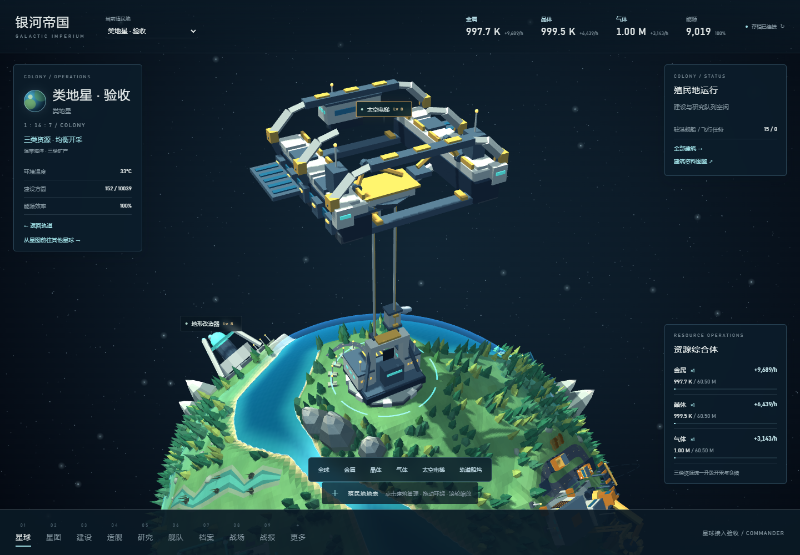
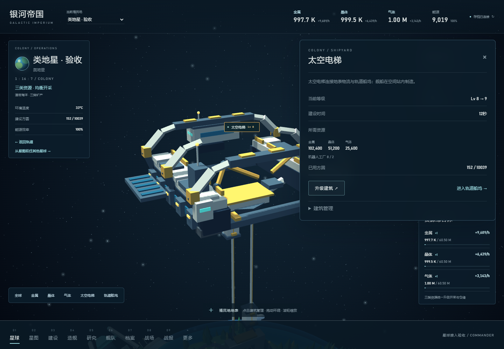